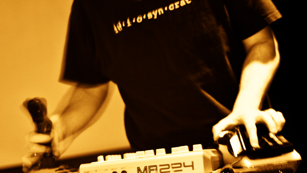

Modality toolkit
Modality is a project dedicated to modal interaction with synthesis processes for physical control in performance. Its primary product is the Modality Toolkit, a library to facilitate straightforward access to hardware controllers in the SuperCollider programming language. It is designed and developed by the ModalityTeam, a group of people that see themselves as both users and developers both of and for SuperCollider.
The central idea behind the Modality Toolkit is to simplify the creation of individual electronic instruments using controllers of various kinds. To this end, a common code interface, MKtl, is used for connecting controllers from various sources and protocols. Currently HID and MIDI are supported with OSC, serial port and GUI-based interfaces are planned to be integrated.
The name Modality arose from the idea to scaffold the creation of modal interfaces, i.e. to create interfaces where e.g. one physical controller can be used for different purposes or it is possible to switch its functionality, even at runtime. It is our belief that integration of such on-the-fly remapping features helps to create instruments that are flexible, powerful, and interesting to play. The strength of such a modal interface is that it allows for fast changes and more opportunity for sonic discovery as can be necessary when, for example, improvising with musicians playing acoustic instruments.
Activity
- April 2014 @ STEIM, Amsterdam, (associated workshop)
- November 2013 @ BEK, Bergen
- May 2011 @ STEIM, Amsterdam
- October 2010 @ BEK, Bergen
The first version of the modality toolkit was released as a Quark at the SuperCollider Symposium 2012. The current state of the project can be found at the GITHub repository.
Associated Projects
- FPLib is a functional programming library for SuperCollider developed by Miguel Negrao and integrates into the modality toolkit.
- Unit Library provides high level abstractions on top of SuperCollider to help users without knowledge of computer programming languages to create (interactive) compositions.
- Controller Booklet is a set of paper templates designed by Till Bovermann for conceptualising, scribbling and experimenting with controllers and their typical layouts.
ModalityTeam
- Jeff Carey
- Bjoernar Habbestad
- Marije Baalman
- Alberto de Campo
- Wouter Snoei
- Till Bovermann
- Miguel Negrao
- Robert van Heumen
- Hannes Hoelzl
- Tim Blechmann
- Amelie Hinrichsen
- Dominik Hildebrand Marques Lopes
Associated Organisations
- BEK, Bergen Center for Electronic Arts, is a non-profit organisation situated in Bergen, Norway, functioning as a national resource centre for work within the field of arts and new technology. BEK works with both artistic and scientific research and development and puts into practice an amount of mixed artistic projects. It also practices an educational program that includes courses, workshops, talks and presentations.
- STEIM (the STudio for Electro-Instrumental Music) is an independent electronic music center unique in its dedication to live performance. The foundation’s artistic and technical departments support an international community of performers, musicians, and visual artists, to develop unique instruments for their work. STEIM maintains a vibrant residency program whereby artists are provided with an artistic and technical environment in which concepts can be given concrete form. Ideas are catalysed by providing critical feedback grounded in professional experience. Finally, new creations are then exposed to a receptive responsive niche public at STEIM before being groomed for a larger audience.
- 3DMin (Design, Development and Dissemination of New Musical Instruments) is an interdisciplinary project between UdK Berlin and TU Berlin to develop new electronic musical instruments for contemporary music practice.
Thanks
We want to thank all associated institutes for their support:
STEIM Amsterdam,
BEK Bergen,
UdK Berlin, &
Media Lab of the Aalto University Helsinki.